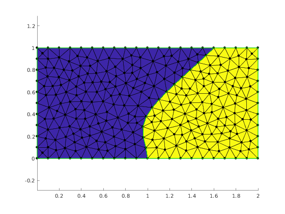
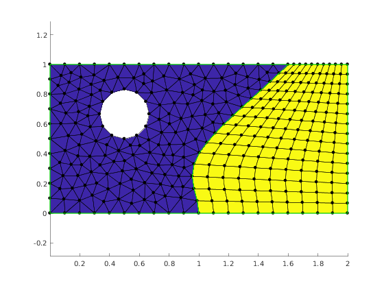
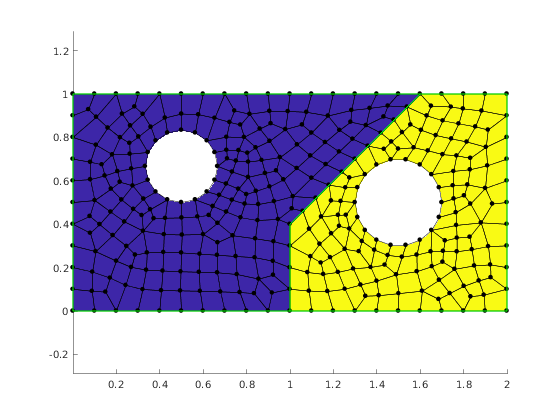

Geometry and meshing demo
Contents
Illustrate TSHGeom geometry model
TSH (Twin Square Holes) is a geometry that consists of two topological squares glued at a common edge. The common edge can be curved or build from two straight segments. It is possible to create circular insets in each subdomian.
The TSHGeom class provides convenient object oriented interface for managing TSH geometry model.
clear variables;
Create Mesher object
When Mesher object is created it takes care of initializing interface to GMSH mesh generator
mesher = mp.Mesher();
Set meshing parameters
mesher.basename ='demotsh'; mesher.folder = '.'; mesher.dim = 2; mesher.clean = false; mesher.quadsonly = false;
Create object describing geometric model
geom = mp.geoms.TSHGeom('my_domain');
geom.dtop = 0.8*geom.dW;
geom.curved = true;
geom.dmy=0.4;
The model is parameterized by the following dimensions:

Generate Mesh object
mesh = mesher.generate(geom, struct('lc', 0.1));
Visualize mesh
The simplest way to visualize mesh is to use Viewer class.
viewer = mp.Viewer();
viewer.show(mesh);
viewer.saveas('demo_tsh_mesh_noholes.png');
 Geometry with insets
Specify insets type
- 1 - hole
- 0 - no inset
geom.insetsType = [1,0];
Specify inset size and location. They are specified through other model's parameters. Please note that the hole in the second domain will not appear as it is explicitly disabled by the inset type given above.
geom.insetsXYR(1,:) = [geom.dW/4, geom.dH*2/3, geom.dH/6]; geom.insetsXYR(2,:) = [geom.dW*0.75, geom.dH/2, geom.dH/5];
Specify meshing parameters for each subdomain.
geom.structured = [false, true]; geom.nyelems = 15; geom.nxelems = [15, 10]; geom.quads(2) = true; geom.quads(1) = false;
Specify how many arc are used to construct inset circles.
geom.insetsN = [4, 3];
Show all properties of geom.
disp(geom);
TSHGeom with properties:
dW: 2
dH: 1
dbottom: 1
dtop: 1.6000
dmx: 1
dmy: 0.4000
curved: 1
insetsXYR: [2×3 double]
insetsN: [4 3]
insetsType: [1 0]
quads: [0 1]
nxelems: [15 10]
nyelems: 15
structured: [0 1]
dim: 2
legacyID: 8
name: 'my_domain'
templateDir: '/devel/jenkins/workspace/Nadamak_demos/src/demos/../packages/+mp/../../core/geom/geomodels'
Generate and visualize mesh again.
mesh = mesher.generate(geom, struct('lc', 0.1)); viewer.clear(); viewer.show(mesh); viewer.saveas('demo_tsh_mesh_noholes.png');
Model with straight segments interface
Now we set the interface to be a straight segments polyline. We also request the two subdomains to be both meshed with quad elements and enable the hole in the second domain.
geom.curved = false; geom.quads = [true, true]; geom.insetsType(2) = 1; mesh = mesher.generate(geom, struct('lc', 0.1)); viewer.clear(); viewer.show(mesh); viewer.saveas('demo_tsh_mesh_straight.png');
Report demo status. This line is just for management of the demo suite and should be skept when reproducing the above example.
mp_manage_demos('report', 'TSHGeom', true);